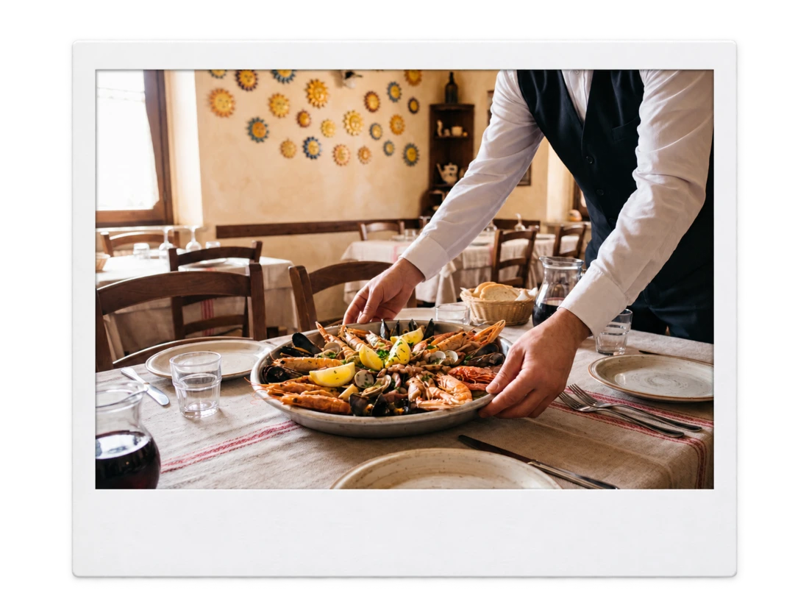
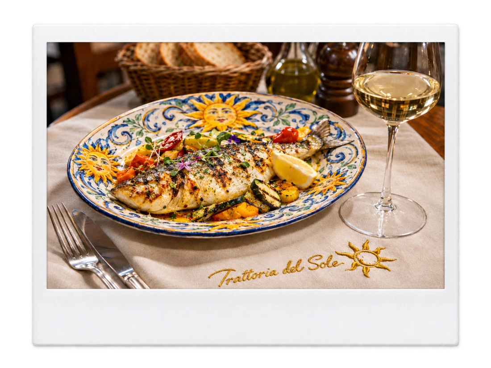
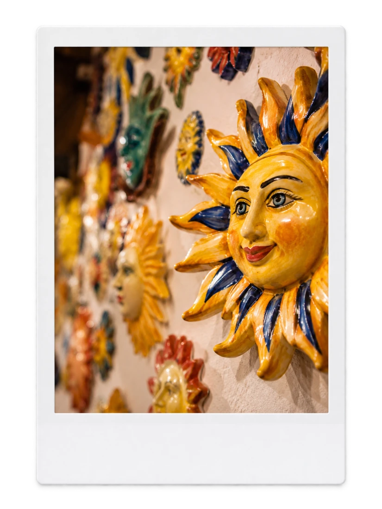
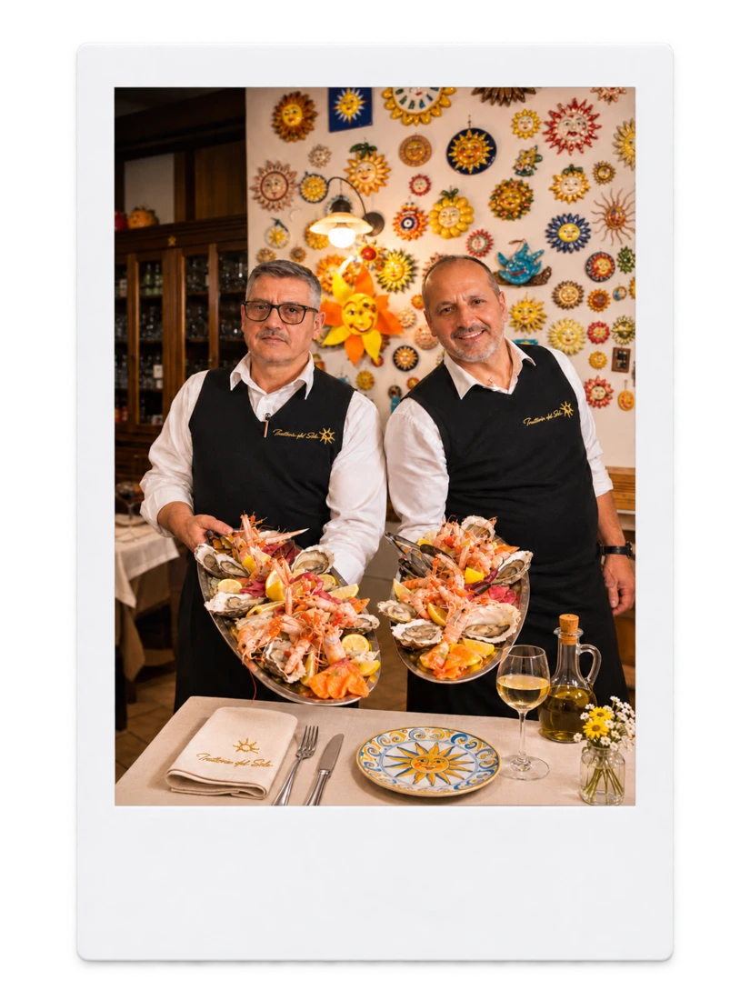
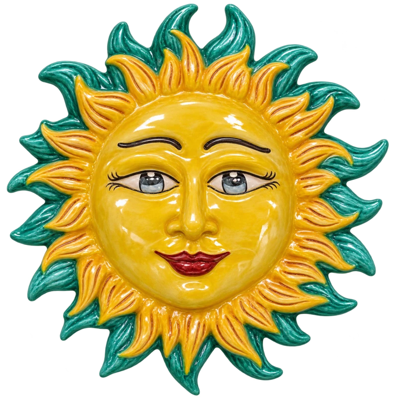
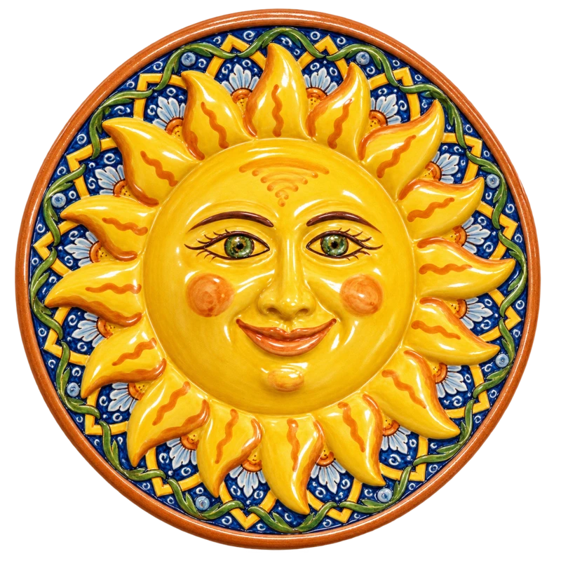

Una storia di Famiglia, di Mare, di Tradizione.
Dal 1970 portiamo a Trebisacce i sapori autentici della nostra terra e del nostro mare. Una trattoria familiare dove la cucina calabrese incontra il pescato dello Ionio, con le ricette di sempre e l’ospitalità di casa.
SCOPRI LA NOSTRA STORIA





Il mare, a tavola.
I sapori dello Ionio, le ricette di casa e il piacere di stare insieme. La nostra cucina racconta il territorio, un piatto alla volta.
C’è un posto per te.
Contatti
Per informazioni e per prenotare il tuo tavolo.
+39 389 076 5062 +39 0981 51797 trattoriadelsoledal1998@gmail.comRecensioni
Le parole di chi è già stato a tavola con noi. Leggi le esperienze dei nostri ospiti su Tripadvisor.
Vai a Tripadvisor